A set of operations is said to be functionally complete or universal if and only if every switching function can be expressed by means of operations in it. A set of Boolean functions is functionally complete, if all other Boolean functions can be constructed from this set and a set of input variables are provided, e.g.
- Set A = {+,*,’ (OR, AND, complement) } are functionally complete.
- Set B = {+,’} are functionally complete
- Set C = {*,’} are functionally complete
Post’s Functional Completeness Theorem – Important closed classes of functions:
- T0 – class of all 0-preserving functions, such as f(0, 0, … , 0) = 0.
- T1 – class of all 1-preserving functions, such as f(1, 1, … , 1) = 1.
- S – class of self-dual functions, such as f(x1, … ,xn) = ¬ f(¬x1, … , ¬xn).
- M – class of monotonic functions, such as : {x1, … ,xn} ≤ {x1, … ,xn}, if xi ≤ yi
if {x1, … ,xn} ≤ {x1, … ,xn}
then f(x1, … ,xn) ≤ f(x1, … ,xn) - L – class of linear functions, which can be presented as: f(x1, … ,xn) = a0 + a1·x1 + … + an·xn ; ai {0, 1}.
Theorem – A system of Boolean functions is functionally complete if and only if for each of the five defined classes T0, T1, S, M, L, there is a member of F which does not belong to that class.
These are minimal functionally complete operator sets –
One element –
{↑}, {↓}.
Two elements –
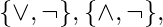 
 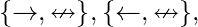
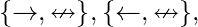 
 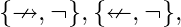
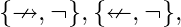  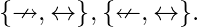
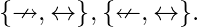
Three elements –
 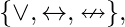
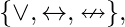 

 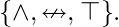
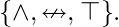
Examples on functional Completeness –
- Check if function F(A,B,C) = A’+BC’ is functionally complete?
- Explanation – Let us start by putting all variables as ‘A’ so it becomes
F(A,A,A) = A’+A.A’ = A’—-(i)
F(B,B,B) = B’+B.B’ = B’—(ii)
Now substitute F(A,A,A) in place of variable ‘A’ and F(B,B,B) in place of variable ‘C’
F(F(A,A,A),B,F(B,B,B)) = (A’)’+B.(B’)’ = A+B—(iii)
from (i) and (ii) complement is derived and from (iii) operator ‘+’ is derived so this function is functionally complete as from above if function contains {+,’} is functionally complete. - Check if function F(A,B) = A’+B is functionally complete?
- Explanation – Let us start by putting all variables as ‘A’ so it becomes
F(A,A) = A’+A’ = 1—-(i)
F(B,B) = B’+B’ = 1—(ii)
F(A,0) = A’+0 = A’—(iv)
Now substitute F(A,0) in place of variable ‘A’
F(F(A,0),B) = (A’)’+B = A+B—(iii)
from (iv) complement is derived and from (iii) operator ‘+’ is derived so this function is functionally complete as from above if function contains {+,’} is partially functionally complete . - Check if function F(A,B) = A’B is functionally complete?
- Explanation – Let us start by putting all variables as ‘A’ so it becomes
F(A,A) = A’.A’ = 0—-(i)
F(A,0) = A’.0 = 0—(ii)
F(A,1) = A’.1 = A’—(iv)
Now substitute F(A,1) in place of variable ‘A’
F(F(A,1),B) = (A’)’*B = A*B—(iii)
from (iv) complement is derived and from (iii) operator ‘*’ is derived so this function is functionally complete as from above if function contains {*,’} is partially functionally complete .Note – If the function becomes functionally complete by substituting ‘0’ or ‘1’ then it is known as partially functionally complete.
- Check if function F(A,B) = A’B+AB’ (EX-OR) is functionally complete?
- Explanation – Let us start by putting all variables as ‘A’ so it becomes
F(A,1) = A’.1 + A.0 = A’—-(i)
F(A’,B) = AB + A’B’–(ii)
F(A’,B’) = AB’ + A’B–(iii)
F(A,B’) = A’B’ = AB—(iv)
So there is no way to get {+,*,’} according to condition. So EX-OR is non functionally complete . - Consider the operations
f(X, Y, Z) = X’YZ + XY’ + Y’Z’ and g(X′, Y, Z) = X′YZ + X′YZ′ + XY
Which one of the following is correct?
(A) Both {f} and {g} are functionally complete
(B) Only {f} is functionally complete
(C) Only {g} is functionally complete
(D) Neither {f} nor {g} is functionally complete - Explanation – See GATE CS 2015 (Set 1) | Question 65
References –
Post’s Functional Completeness Theorem
Functional completeness – Wikipedia